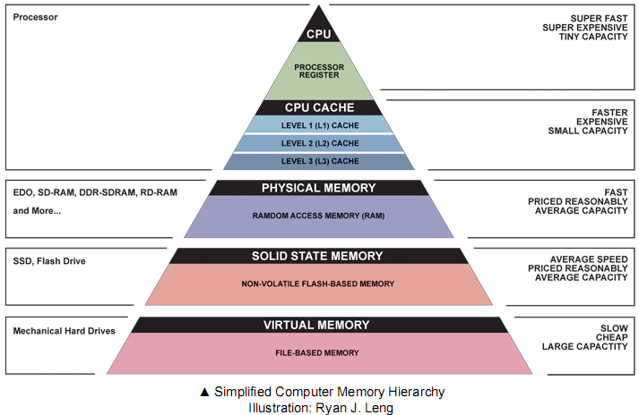
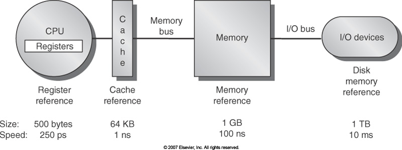

Computer Memory - A High Level Overview
2/20/2016
There are many factors in a computer that affect overall speed. Few of these factors compare to the impact of a computer’s memory system. Computer memory is the space where data is processed and stored. You have probably heard the term computer memory before, but what you might not know is that computer memory involves several layers of systems operating at varying levels of editability and efficiency. Before we dive further in to this topic, let’s take a very high level look at the components involved.
Computer memory operates based on a heirarchy, drawing first from systems that are easily accessed and easily changed, known as volative memory, to systems that are slow and not easily changed, known as non-volatile memory. You can see here an inverse relationship between speed and memory capacity.
Now that we are starting to get an idea for the computer memory hierarchy, let's take a look at how components are connected together. First, we have the Central Processing Unit (CPU). The CPU is the unit that carries out the instructions of a computer program by performing basic arithmetic, logical, control, and input/output operations. If you think of your memory system as an extensive library, the CPU is the librarian who completes requests to retrieve books. Much like the librarian, the CPU completes request to retrieve and manipulate data. From there, we have a cache (we will go over this later), memory, and Input/Output (I/O) devices. If this does not all make sense now, don’t worry, we will go over every component step by step!
Think of a device you operate on a daily basis; your iPhone, for instance. When you hit your iPhone's on button, how does your phone know what to do? How does it know to bring up a homepage full of apps? How does it know to bring up that lockscreen photo of your cute dog? Once you start using your phone, maybe you open up Instagram to share a pic of that perfect cup of coffee you just made (#coffeeislife #perfectcoffeepic #blessed). How does your phone remember to autocomplete recent hashtags you’ve used, or access that photo you just took?
Read Only Memory - ROM
Unsurprisingly, the answer is computer memory. But the really cool thing about computers is that there are different types of memory. What does that mean? Take the example above, you turn on your phone and your home screen comes to life. Your phone is pulling data from one of it's memory systems, Read Only Memory also known as ROM. ROM is a non-volatile system, meaning it is not easily changed. For example, your phone’s operating system is stored in Read-Only Memory. Whenever you turn on your phone, the phone loads data from it’s Read-Only Memory. Reading from ROM is a slow process. Think of all the time it takes to turn on your phone when it is completely shut off, versus the time it takes to complete nearly any other operation. Now think about the last time you had to update your operating system. In this scenario, you are actually writing to ROM, which takes even longer. Now we understand where your operating system data is stored, but how do we turn this static memory system in to the dynamic iPhone we all know and love? Rom uploads your operating system to another faster, volatile memory system, Random Access Memory (RAM). This is where things move a bit more quickly.
Random Access Memory - RAM
RAM is what people typically refer to when the use the term computer memory. RAM is everything that ROM is not. While Read-Only Memory is semi-permanent and slow to change, Random Access Memory is temporary and fast. You can read from and write to Random Access Memory, but RAM is only meant to remember things for a temporary amount of time. Returning to the original example of an iPhone, when your phone turns on and starts reading data from ROM it uploads your phone’s operating system data to RAM. This is the same operating system that is used every time your phone turns on. Now that it is uploaded to Random Access Memory, you can start using your phone and accessing other types of memory. When you open an application or file, its data is loaded onto Random Access Memory. When the application or files are closed, they are purged from RAM.
Other Storage Device Types
You can start to see that RAM is used for operation while ROM is used to hold unchanging data. But how does your phone know when you make unique changes to your phone? For example, say you downloaded Instagram and placed it on your home screen. Instagram is not part of your operating system and it is certainly not stored in Read-Only Memory. Random Access Memory, on the other hand, is only meant to temporarily hold data. It could not possibly store all the data my Instagram app holds. If this is true, how does my phone remember Instagram, or any unique data on my phone? The answer, your phone’s local data storage. There are many different ways to store local data efficiently, and some are better than others. Do you remember, or do you own, a computer that would sound like it was taking off once you turned it on? That would have been the computer's hard disk, where local data was actually stored on a physical disk. More modern forms of local data storage are less mechanical. A relatively new example is solid state, which utilize integrated circuit assemblies to store information. If you are interested in learning more about different methods for storing data, including hard disk and solid state, check out the resources at the bottom of this article. For now, we’ll refer to this topic as local data storage.
Here is what you need to know about your computer’s local data storage. It holds information until the user purposefully deletes it. When you save a file or, using the example above, download Instagram, you are actually storing that data in your device’s local storage. When you delete a file, app, or any other data, you are removing that data from local storage. External storage devices, such as a USB or external hard drive, hold data in a similar manner. They are external devices connected via ports whose data can still be accessed and stored in RAM.
But wait, if all your permanent data ends up on your device’s hard disk, why even bother with RAM? Wouldn't it be much more efficient to have one, less volitile memory type where all our data could be stored? Think of all the Word document repots you would not have had to rewrite in the 4th grade if everything was automatically saved to local storage! Sure, it would be possible to access all information purely through a device’s local storage, but it would be so so so slow. Random Access Memory can be accessed hundreds of times faster than your device’s hard disk, and is therefore much more desirable.
Memory and Speed
It is difficult to explain why RAM is faster than your computer’s data storage system, as the technology is constantly changing. To keep it simple, RAM is faster because the mechanical components involved in local data storage system move very slowly when compared to RAM. However, recent developments including the use of carbon nanotubes and integrated circuit assemblies have continued to blur the lines between RAM and local storage. As technology continues to evolve, the gap between RAM and local storage will continue to shrink and the relationship between the two memory types will constantly change.
Cache
Now, to a very clever addition to computer memory, the cache. A cache (pronounced cash), is a component that stores data so future requests for that data can be completed quickly. Let’s return to the library analogy, where your computer's data is a library full of books that can only be accessed by one librarian. Imagine if you walked in to this library, and asked for a copy of Eloquent Javascript. The librarian would go through her library, find the book by it’s title, retrieve it from the back stock room, and bring it to you. Once you took the book home and read it, you would return it to this same librarian who would file it away once again. Now imagine one of your coworkers went to the same library right after you left and asked for the same book. The librarian would once again have to look up the book, go to the back stock room to locate it, and bring it to you at the front desk. This seems like a highly inefficient process, especially if the request for Eloquent Javascript is repeated tens, hundreds or thousands of times. There has to be an easier way to recall recently used data.
This is where cache comes in to play. Imagine if that librarian started carrying a backpack around with her that held up to 10 books. Whenever a book was returned, she could store the recently used copy in that pack. Now, imagine you just returned the copy of Eloquent JavaScript, and instead of returning the book to the store room the clever librarian stored it in her backpack. When your coworker came in next, asking for the same book, the librarian would first check her backpack to see if it was there. Cache hit, she would find it! On the other hand, if you coworker came in asking for the Well Grounded Rubyist, the clever librarian would do a quick search through her backpack and alas, cache miss, the book could not be found. The librarian would then return to the original process, searching for the book and retrieving it from the stock room.
There is potential for inefficiency with the cache process. If your data is not in the cache, cache miss, some time was wasted searching the missing cache for data. However, the tiny amount of effort it takes to search through a cache is typically so small compared to the effort required to search an entire memory system. This little inefficiency is negligible.
With advances in computer memory being discovered every few decades, this high level overview will surely be obsolete within a few years. What an exciting time to be a developer! Until then, please check out the resources below used to complete this article. There are so many concepts I did not have a chance to dive in to. I highly encourage you to further investigate the evolution from hard disk to solid state data storage systems. It is pretty cool.